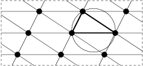
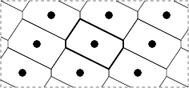

Geometry of Numbers
A lattice L is a discrete subgroup set of the Euclidean space. In a lattice L an empty sphere is a sphere containing no lattice points in its interior and containing n+1 affinely independent points on its surface. A Delaunay polytope is the convex hull of the points on the surface of an empty sphere.


Delaunay polytopes form a tesselation dual to the Voronoi partition, which has a lot of uses in computational geometry and physics. We design specific algorithm for enumerating the Delaunay polytopes under symmetry.
L M. Dutour Sikirić, A. Schuermann, F. Vallentin, Complexity and algorithms for computing Voronoi cells of lattices, Mathematics of computation 78 (2009), 1713--1731.